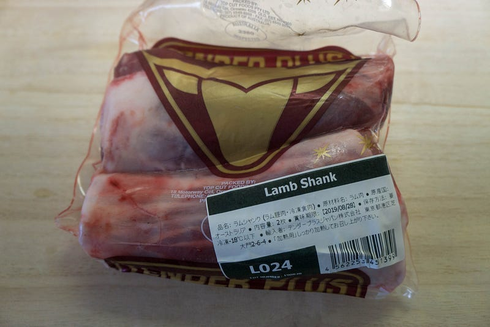
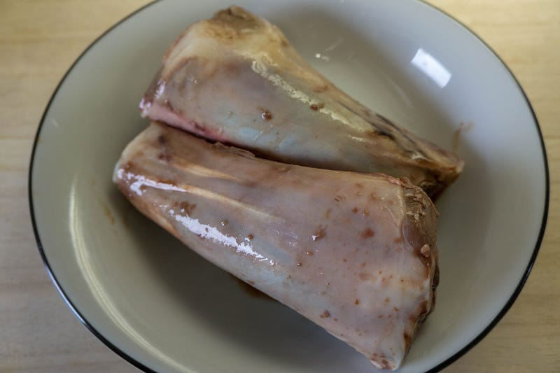
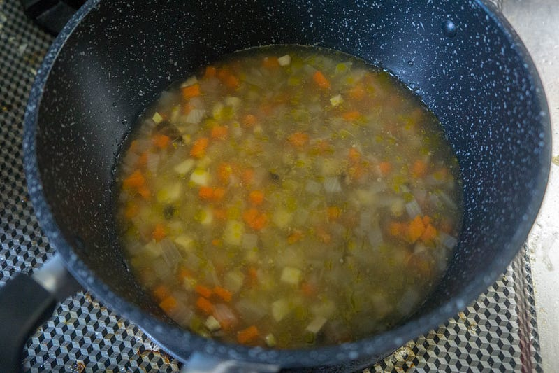
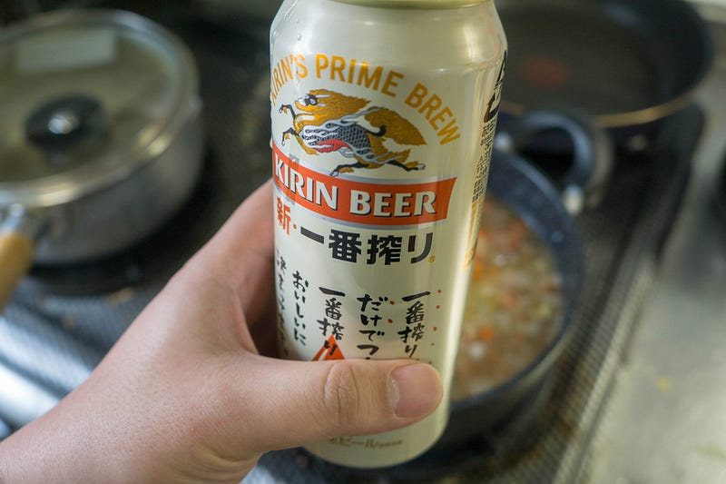
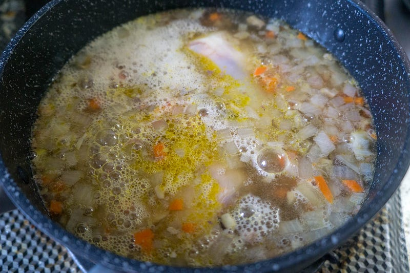
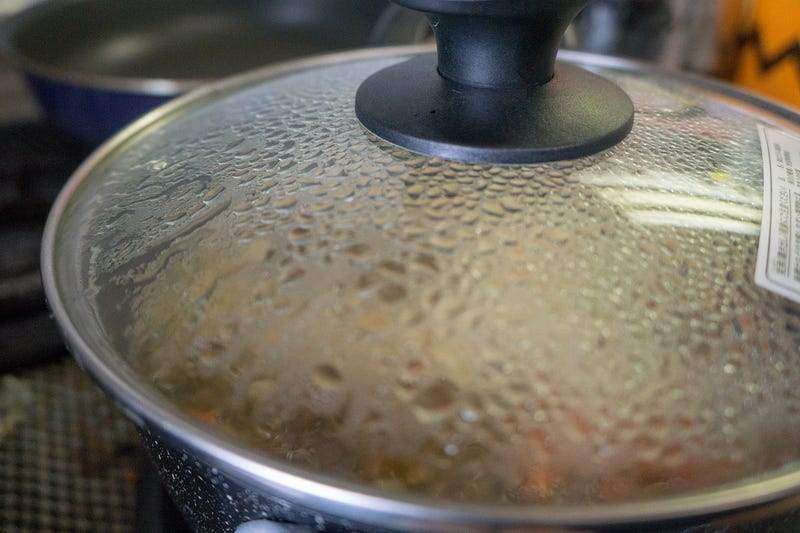
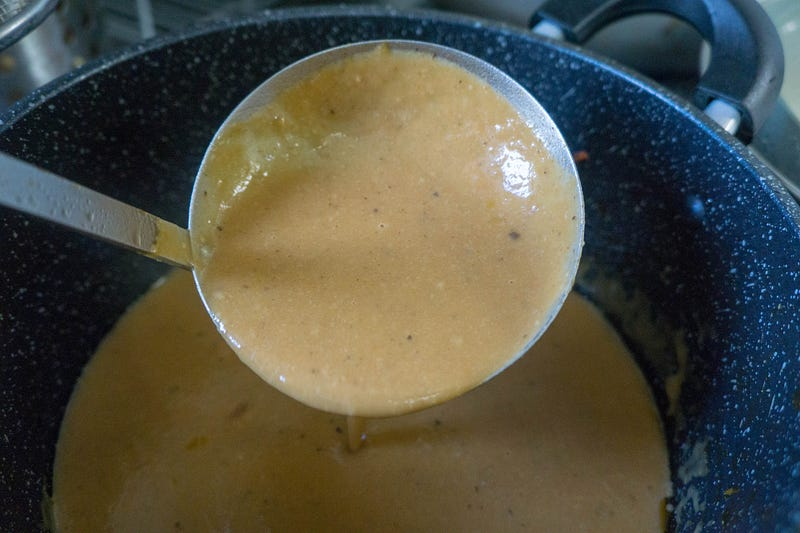
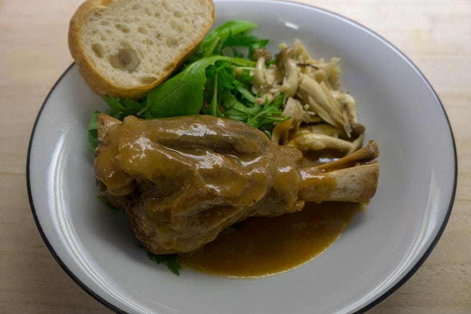
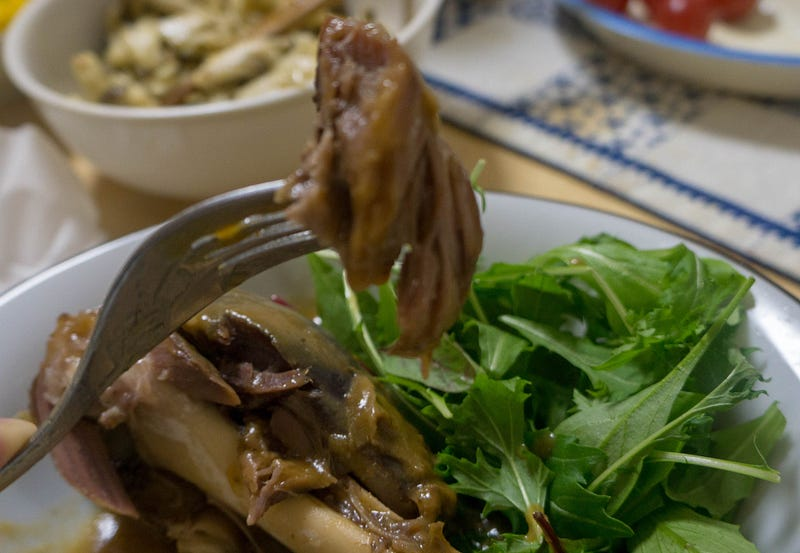

ラムシャンク（すね肉）のフレンチっぽいもの
ラムシャンク（すね肉）のフレンチっぽいもの
ラムを食べたい妻のためにラムラックを買ったわけだが、なんかそれだけじゃつまらんなぁ〜と思って、初挑戦のラムシャンクを買ってみた。ちらっと見た限りは「ビール煮」というキーワードが見られたので、それをベースにちょっとフレンチっぽいものを作った。
はい、というわけでMeat Guyで買ってきた。足。超、足。

商品説明 オーストラリア･タスマニア島の骨付きラムスネ肉。タスマニアンラム。 お肉がたっぷりついたこのラムシャンク、レストラン様には大人気の商品です。骨から良いだしもでて、ご家庭でもレストラン並みの味が出せるかも。…www.themeatguy.jp
昨日はラムラックをanovaで加熱していたのでこいつもついでに一緒に6時間ほど加熱。
妻は欧米料理にあまり縁が無く育ったのだけれども、よりによって筆者と出会ってしまったが故に、ラムだ鴨だ鹿だ猪だなどを様々な洋風な手法で食べさせられたりと教育を施されてしまった。そんな妻が「…ラム肉が食べたい」と伝えてきたのである。作りましょう…medium.com
anovaから引き上げるとさらに足っぽい。この時点でもう結構柔らかくできあがっていたけれども、我慢我慢…

すね肉は当然スジっぽい肉なので別にこのまま焼いて食べても大してうまくない。なのでここから煮る作業に移るのだが、冷蔵庫を見てみたらその前の晩の野菜スープの残りがあった。これで煮てしまう事にする。

じゃがいも、ニンジン、タマネギ、椎茸を煮て、オリーブオイルと塩で味付けしただけのスープ。こいつに肉がひたひたになるくらい水分を追加してやって、煮る。

よし、水分は追加した。あとは俺の喉の水分補給する。

ラムシャンクは完全に水没。アクっぽいのはビールの泡です。

塩を調節して弱火でことこと。3時間くらい煮たかなぁ。最後に市販のデミグラスソースを入れてもうひと煮立ち。この日はこのままあら熱を取って、冷蔵庫へ。
そして本日、冷蔵庫からこれを取り出し、かたまった脂を取り除き、バーミックスで撹拌して水分を少し飛ばしたのがこのソース。

ラムシャンクからの出汁がたっぷりでて、とろりとしてる。ラムくさい、うまそうな香りがたまらん。
肉は本当はオーブンとかで温め直すべきなんだろうけど、今回は沸騰したお湯の火を止めてから、ジップロックに入れた肉を放置しておいた。anovaを使わなくてもこれで充分。

盛りつけてこんな感じ。付け合わせのキノコソテーを作ってくれてた妻、偉い！頼んでもいないのにバタールパンを買ってきていた妻、偉い！

ホロホロと骨からはずれる柔らかさ、芳醇な香り、完全にフレンチっぽい何かになった！うまい！ソースをパンにつけてまたうまい！うまい！
原価や手間から考えると激安ってわけではないが、フレンチレストランで食べるようなものを家で食べられるのはかなり嬉しい。
残ったソースは本当はパスタにでも転用したいところだけど、ちょっとそれをするタイミングがなさそうなので、明日の朝、俺の定番朝食の「ご飯に目玉焼きをのせたもの」を食べる時に普段使っている醤油ではなく、このソースをかけて食べて、名残を惜しみたいと思う。
というわけで日本ではあまり耳慣れないラムシャンクですけど、かなりうまい出汁が出るし、湯煎をうまく使うと比較的簡単にそれっぽいものが食べられるので個人的にはおすすめです。